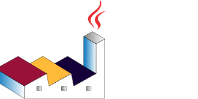

PlantUML gallery

Figure 1
@startuml
allowmixing
<style>
:root {
--text: #0b0c0c;
--line: #0b0c0c;
--brand: #1d70b8;
--success: #0f7a52;
--surface-border: #8eb8dc;
--surface-background: #f4f8fb;
--main-background: #ffffff;
--focus: #ffdd00;
--error: #ca3535;
}
document {
BackGroundColor var(--main-background);
}
arrow {
LineColor var(--line);
LineThickness 1.4
}
frame {
BackGroundColor: var(--main-background);
LineColor: var(--line);
LineThickness 1.2
FontColor: var(--text);
FontName "DejaVu Sans"
FontSize 13
RoundCorner 6
.emph1 {
LineColor: var(--brand);
FontColor: var(--brand);
}
.emph2 {
LineColor: var(--success);
FontColor: var(--success);
}
}
rectangle {
BackGroundColor: var(--main-background);
LineThickness 1.3
RoundCorner 6
.emph1 {
LineColor: var(--brand);
FontColor: var(--brand);
}
.emph2 {
LineColor: var(--success);
FontColor: var(--success);
}
}
object {
BackGroundColor: var(--main-background);
LineColor: var(--line);
LineThickness 1.3
FontColor: var(--text);
FontName "DejaVu Sans"
FontSize 12
RoundCorner 6
.emph1 {
LineColor: var(--brand);
FontColor: var(--brand);
}
.emph2 {
LineColor: var(--success);
FontColor: var(--success);
}
}
note {
BackGroundColor: var(--focus);
LineColor: var(--line);
FontColor: var(--text);
FontName "DejaVu Sans"
FontSize 12
}
</style>
top to bottom direction
/'
' left to right direction
'/
hide stereotype
frame "ERRIC" as erric {
object "Conv1D" as cIn {
kernel = 9
stride = 1
input channels = 2
output channels = 64
padding = "same"
}
rectangle "Residual blocks" as rb <<emph2>>
rectangle "ELU" as actOut
object "Prediction head" as pHNB <<emph1>> {
sigma = exp
}
object "Prediction head" as pHGamma <<emph1>> {
sigma = softplus
}
}
frame "Residual block" as rbDetailed <<emph2>> {
allowmixing
rectangle "In" as sp <<emph2>>
rectangle "ELU" as rbElu1 <<emph2>>
rectangle "ELU" as rbElu2 <<emph2>>
object "Conv1D" as rbConv1 <<emph2>> {
kernel = 9
stride = 1
input channels = 64
output channels = 64
padding = "same"
}
object "Conv1D" as rbConv2 <<emph2>> {
kernel = 9
stride = 1
input channels = 64
output channels = 64
padding = "same"
}
rectangle "+" as plus <<emph2>>
rectangle "x 1/sqrt(L)" as rbTimes <<emph2>>
rectangle "Out" as rbOut <<emph2>>
}
frame "Prediction head" as dPredHead <<emph1>> {
object "Conv1D" as cOut <<emph1>> {
kernel = 1
stride = 1
input channels = 64
output channels = 2
padding = "same"
}
rectangle "sigma" as mFn <<emph1>>
rectangle "scale (mean and std)" as locScale <<emph1>>
}
cIn --> rb
sp -[#0f7a52]-> rbElu1
rbElu1 -[#0f7a52]-> rbConv1
rbConv1 -[#0f7a52]-> rbElu2
rbElu2 -[#0f7a52]-> rbConv2
rbConv2 -[#0f7a52]-> rbTimes
rbTimes -[#0f7a52]-> plus
sp -[#0f7a52]-> plus
plus -[#0f7a52]-> rbOut
rb --> actOut
rb <-[#0f7a52]- rb : <color:#0f7a52>x8</color>
actOut --> pHNB
actOut --> pHGamma
pHNB -- dPredHead #1d70b8;line.dashed
pHGamma -- dPredHead #1d70b8;line.dashed
cOut -[#1d70b8]-> mFn
mFn -[#1d70b8]-> locScale
rb -- rbDetailed #0f7a52;line.dashed
note right of locScale
The output of each head is multiplied by
the location and scale of the training
data
end note
note top of mFn
The activation is exponential for the
incidence prediction head and softplus
for the reproduction numbers.
end note
note right of rbTimes
To initialize the residual block close
to the identity map we scale the
residual branch down by the root of the
number of blocks.
end note
@enduml
Figure 2
@startuml
<style>
:root {
--text: #0b0c0c;
--line: #0b0c0c;
--surface: #f4f8fb;
--surface-header: #dbe7f6;
--brand: #1d70b8;
--success: #0f7a52;
--note: #ffdd00;
}
document {
}
note {
BackGroundColor: var(--note);
LineColor: var(--line);
FontColor: var(--text);
FontName "DejaVu Sans"
FontSize 12
}
</style>
left to right direction
hide circle
skinparam linetype ortho
skinparam shadowing false
entity "simulation" as simulation {
* id : integer <<PK>>
--
tree_file : text
tree_height : float
net_removal_rate : float
}
entity "measurement" as measurement {
* id : integer <<PK>>
--
simulation_id : integer <<FK>>
time : float
prevalence : float
cumulative_infections : float
effective_reproduction_number : float
}
entity "estimate" as estimate {
* id : integer <<PK>>
--
simulation_id : integer <<FK>>
method : text
time : float
prevalence_point : float
prevalence_lower : float
prevalence_upper : float
}
entity "diagnostic" as diagnostic {
* id : integer <<PK>>
--
simulation_id : integer <<FK>>
variable_name : text
ess : float
geweke_z : float
}
simulation ||--o{ measurement : has
simulation ||--o{ estimate : has
simulation ||--o{ diagnostic : has
note right of measurement
Time is measured forwards
from the origin.
end note
note bottom of estimate
Lower and upper columns store
interval summaries, e.g. 95% CrI.
end note
@enduml
Figure 3
@startuml
allowmixing
top to bottom direction
skinparam shadowing false
skinparam backgroundColor white
skinparam ArrowColor black
skinparam nodesep 35
skinparam ranksep 35
hide stereotype
<style>
.constant {
BackgroundColor white
LineColor black
}
.stochastic {
BackgroundColor white
LineColor black
}
.deterministic {
BackgroundColor white
LineColor black
LineStyle 5-5
}
.observed {
BackgroundColor lightgray
LineColor lightgray
}
</style>
usecase "theta" as theta <<constant>>
rectangle "i = 1, ..., n" as plate {
rectangle "foobar_i" as ppp <<constant>>
usecase "d_i" as ddd <<deterministic>>
usecase "z_i" as z_i <<stochastic>>
usecase "x_i" as x_i <<stochastic>>
rectangle "y_i" as y_i <<observed>>
z_i --> x_i
x_i --> y_i
}
theta --> z_i
ddd --> y_i
ppp --> ddd
@enduml
Figure 4
@startgantt
Project starts 2026-08-03
[Novelty detection] starts 2026-08-03
[Novelty detection] lasts 3 weeks
[Ingress] starts 2026-08-03
[Ingress] lasts 4 weeks
[Ingress] is colored in Gray
[Meeting A] happens 2026-08-20
[Final run] starts 2026-08-31
[Final run] lasts 2 weeks
[Meeting B] happens 2026-09-03
[Egress] starts 2026-09-14
[Egress] lasts 4 weeks
[Egress] is colored in Gray
[Meeting C] happens 2026-09-17
[Writing] starts 2026-09-21
[Writing] lasts 3 weeks
[Meeting D] happens 2026-10-01
[Novelty detection] --> [Final run]
[Ingress] --> [Final run]
[Final run] --> [Egress]
hide footbox
printscale weekly with calendar date zoom 3
@endgantt
Figure 5
@startuml
<style>
:root {
--text: #0b0c0c;
--line: #0b0c0c;
--brand: #1d70b8;
--success: #0f7a52;
--note: #ffdd00;
}
document {
}
note {
BackGroundColor: var(--note);
LineColor: var(--line);
FontColor: var(--text);
FontName "DejaVu Sans"
FontSize 12
}
</style>
top to bottom direction
hide circle
skinparam linetype ortho
skinparam shadowing false
interface "Collection" as coll <<interface>>
interface "List" as list <<interface>>
abstract class "Abstract List" as absList
class "ArrayList" as arrList
list --|> coll
absList ..|> list
arrList --|> absList
note right of list
List is generalised by Collection
end note
note left of absList
Abstract List is an abstract class which
implements the List interface
end note
@enduml